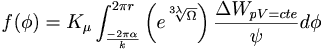

De: La Frikipedia, la enciclopedia extremadamente seria.
De: La Frikipedia, la enciclopedia extremadamente seria. De: La Frikipedia, la enciclopedia extremadamente seria.
El forlayo es la partícula subatómica elemental que resulta de un formateo a bajo nivel de un neutrón sobreexcitado mediante bombardeo com muones τ y varios cafés. Su empleo en la detección de curvas en el espacio Vincent H. Forlay (comunmente abreviado como VHF, inventor de las antenas de televisión junto con Hidetsugu Yagi y Shintaro Uda) fuera copiado por Nikola Tesla.Su desintegración genera 1 KÑ.

Para instalar un forlayo en la junta de la trócola (si lo quisiéramos en estado metaestable pero desagregado [con lo que no podríamos usarlo en la trócola] podríamos formatear a bajo nivel un neutrón sobreexcitado mediante bombardeo com muones τ y varios café) hay que concentrar un haz de 1 KÑ sobre una superficie telúrica evolvente. Alternativamente, se pueden derivar disyuntivamente desde la raíz cúbica de φ regurgitándolos de la sucesión de filostros, pero ello conlleva el riesgo de que desencadene la renderización del logaritmo neperiano del tercer axioma junto con la parábola del hijo pródigo si la concentración filóstrica fuera mayor a la densidad permitida por las especificaciones de la trócola. Sin embargo, en caso de que ello se produjera en una espacio n-dimensional de geometría euclideana, la integración isolacional asociada a la parábola hipoarborescente que generaría la propia disfunción metacognitiva de la sintaxis hiperbárica a consecuencia de la síntesis adiabática de los filostros isentrópicos impediría la correcta dicotomía decreciente del algoritmo Quicksort y por lo tanto produciría una excepción isócora funcional que bloquearía finalmente el proceso de instalación formal de los mentados forlayos.
Mediante el método de Bohl-Faber se aprovecha la metaestabilidad intrínseca del concentrado de forlayos a las temperaturas de 3141.59 K y 2718.2818 K para desfragmentar la derivada de una función lambda de la onda electromagnética mediante un servomotor antiestático y procesarla logarítmicamente obteniendo así la asignación booleana secuencial de la onda. Si utilizamos un sistema retroalimentado apilado de varios servomotores podemos obtener un regenerador multifase que reasigne de forma coogenerada un haz de filostros multipartícula. El índice de compresión de ondas depende de la Constante de rendimiento trocolar, de la forma: 
Existe un peligro de que acaezcan redundancias hertzianas al distorsionar una sinestesia hiperbólica en una geometría minkowskiana para obtener forlayos de forma asíncrona; la desviación respecto del eje de coordenadas polares aumenta cuando se intenta seleccionar forlayos mediante el proceso oligúrico para obtener los que tengan una carga mayor de filostros senopaleales. Este fenómeno, conocido como la paradoja de van den Waahg, produce disfunciones hipoglucémicas cuando se aplica un haz de forlayos sobre una superficie filóstrocamente neutra, como las bioestructuras reducibles humanoides de grado seis o mayor, lo cual causa una desviación elemental sobre los muones pi ionizando de forma asíncrona la superficie gaussiana, lo que impide la ejecución sin riesgos de una tomografía mediante emisión de forlayos (TEF). Para evitarlo, la trócola generadora de forlayos tiene que disponer de un selector hipoalergénico biosostenible que se complementa con un emisor de gluones para provocar un desfase en el campo magnético usado en la oliguria y obtener los forlayos de forma pararregular y no redundante. El factor de redundancia se calcula mediante la 2ª ley de Forlay:
La cohesión paranasal de unidades inversas en un campo de acción monocotiledóneo puede dimanar en una sucesión de factores otolíticos. Esta causa puede inducir dacriorrea fácilmente como se puede ver en la siguiente fórmula:
En el proceso metalingüístico de retroalimentación forlayana de sedimentos hiperbáricos mediante la disposición transversal de la junta de la trócola en ubicación ortonormal respecto del noúmeno kantiano de excitación metamórfica parasinusoidal, se puede realizar una conexión entre el controlador hiperfase trocolar y el condensador filóstrico mediante un conector RJ45 sobrealimentado con un flujo gaussiano ondulatorio, lo que puede producir electrólisis osmótica en un cisternador enchufado en serie. Ello se utiliza para inducir corrientes pleonásmicas de forma hiperbáricamente incremental y en el sentido de la fuerza de Coriolis equivalente que generan una dicotomía progresiva lerrouxiana para que precipiten las sinestesias polimórficas quedando en un subestado de agregación metaestable
Para controlar axialmente los flujos asíncronos de los campos magnetofilóstricos producidos por operaciones adiabáticas por inyección de forlayos, se requiere manejar el forlayómetro con cuidado teniendo en cuenta las desestabilizaciones producidas por las variaciones en las constantes filostrodinámicas del cisternador trocolar, que podrían generar problemas como la sobrehidratación lípida del condensador filóstrico, la permutación transaccional del arco gaussiano, la pigmentación telúrica o el desgaste excesivo de la junta de la trócola. Por ello, se han de conocer los axiomas compactos postulados por Forlay, siendo el más importante de ellos el principio de acción-reacción, según el cual en cada cambio del estado del sustrato filóstrico, la corriente forlayana del cisternador reacciona para compensar retroactivamente el cambio emitiendo partículas beta, que hacen vibrar la trócola. Midiendo estas vibraciones es posible verificar que se mantiene el margen de seguridad según los estándares de la GNAA.
En un contexto imperativo que soporte un paradigma ontológicamente empirizado, es posible apreciar los efectos colaterales de la desfragmentación de un hipocampo magnético, de tal manera que los forlayos responden a la inducción paranomásica ejerciendo una fuerza de síntesis sobre la junta de la trócola, lo que se utiliza para aumentar el grado de reactividad filóstrica o grado forlayano, que responde creando una antítesis forlayomagnética de potencia igual a utilizada para aumentar la velocidad de alienación filóstrica del condensador de fluzo-
En sistemas no euclidianos se puede observar un corrimiento hacia el rojo en las unidades forlayanas de derivación potencial. Este efecto se crea cuando los campos alternos en un espacio de Schwartz son derivados según la ley de Von Scheiße; aplicandose así la transformada de Fourier (). Hablamos así de la filindrulación, también conocida como metodo deductivo de control pubocigeo aplicado a la hipertrofia articular. Dichos sucesos redundan normalmente en la saponificación semítica, lo cual se comprobó en la universidad de Varsovia en 1939. Para controlar dicha filindrulación se suele recurrir a las teorías de Gauss quien desarrolló con solo 12 años un método consistente en la orquitomía anómala. Normalmente una orquitomía desencadena las famosas series de Farinelli las cuales pueden modificar los factores apabullantes de frecuencias oscilatorias forlayanas combinándose con las unidades de filostros con reflejos condicionados. Lamentablemente, la orquitomía es perseguida por la ley por considerarse un delito contra la salud pública.
Según el principio de Arquímedes aplicado a una dimensión filóstrico-minkowskiana, 'todo haz de forlayos introducido en un campo filostromagnético ejerce un empuje proporcional a su distorsión lerrouxiana'. Dado que a su vez un forlayo en posicionamiento dióptrico matricial genera por sí un campo filóstrico espiral que a su vez influye sobre los forlayos adyacentes que pueden formar un fractal forlayano sobre una disolución monolítica en el cisternador. Aplicando un sistema de permanganato hidrolípido hipoglucémico se pueden apreciar a la luz de longitud de onda fractales con anisotropías dependientes de la entropía específica de las constantes vitales del recipiente: entalpía de filindrulación, pr0noridad y fratricidad. Al variarlas se pueden inyectar desviaciones estándar bidimensionales sobre la superficie del fluido amniótico
Las secuencias braquicéfalas adversas del sistema trocolar frecuentemente sufren una reabsorcion ectoplásmica mitocondrial que lleva a una subaspersion nosocomial en mitosis cuantica transducida lo que genera la implosión supersónica de Iridio 77 con diez cañones por banda y viento en popa a toda vela como demuestra la siguiente fórmula:
Generalmente se emplean diferentes condensados de disoluciones filostropermeables en las trócolas para manejar los forlayos. Pero los grupos funcionales forlayanos no reaccionan de la misma forma si se les saca fuera de su hábitat natural, dado que pierden la coherencia sintáctica de grupo que mantienen oligárquicamente en la cámara de forlayación, el condensador de fluzo o el cisternador de la trócola. Al desfragmentarse los catationes, se produce el advenimiento molecular del mileniarismo y disminuye el grado de agregación del conglomerado forlayano hasta tal punto que aumenta su capilaridad, mientras aumenta su viscosidad debido al efecto Fary.
Las demostraciones matemáticas que lo demuestran parten de la identidad de Euler , a la que aplicando los factores relativistas de Lorentz y se integra exponencialmente con la derivada de la función de deflagración de onda asociada al vector matricial de Rasq Al-Aq'bar de modo que diviendo entre la ecuación diferencial de identidad de Parménides resulta que obtenemos la expresión de la constante reticular de sobresaturación de grupo filóstrica: con la que podemos representar en función del factor de miseria del Dr. Acebes las propiedades del agregado forlayano.
No más de 3 ni menos de 4.
| | ||
|
Materia
Magnitudes
Mecánica
Cinética y Dinámica
Energía
Física Cuántica y Nuclear
Científicos
|
Autor(es):